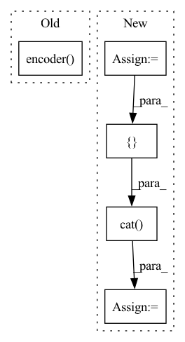

Pattern ID :7768

Before Change
h_action = self.action_encoder(h_action)
h = torch.cat([h_pose, h_action], dim=1)
h = self.encoder(h)
fc_success = self.fc_success(h)[:, 0]
fc_length = self.fc_length(h)[:, 0]
fc_auc = self.fc_auc(h)[:, 0]
After Change
// fc_success, fc_length
h_action = torch.cat([grasp_pose, initial_pose, reorient_pose], dim=1)
h_action = self.encoder_action(h_action)
h_object_poses_and_action = torch.cat(
[h_object_poses, h_action], dim=1
)
h_object_poses_and_action = self.encoder_object_poses_and_action(
h_object_poses_and_action
)
In pattern: SUPERPATTERN
Frequency: 4
Non-data size: 5
Instances
Fragment ID: 27773639
Project Name: wkentaro/safepicking
Commit Name: f7ae1f3ffea500f9a1332d0291598f828b898434
Time: 2021-05-30
Author: www.kentaro.wada@gmail.com
File Name: examples/reorient/train.py
M Class Name: Model
N Class Name: Model
M Method Name: forward(6)
N Method Name: forward(6)
M Parent Class: torch.nn.Module
N Parent Class: torch.nn.Module
M File Name: examples/reorient/train.py
N File Name: examples/reorient/train.py
M Start Line: 96
M End Line: 104
N Start Line: 106
N End Line: 134
'>
Before Change
def train_G(self, fake_smiles: List[str], real_smiles: List[str]):
self.encoder.zero_grad()
real_vecs = self.encoder(mol2graph(real_smiles, self.args))
fake_vecs = self.encoder(mol2graph(fake_smiles, self.args))
real_score = self.netD(real_vecs)
fake_score = self.netD(fake_vecs)
After Change
real_output = self.prediction_model(real_smiles).detach()
real_enc_output = self.encoder.saved_encoder_output
real_vecs = torch.cat([real_enc_output, real_output], dim=1)
fake_output = self.prediction_model(fake_smiles).detach()
fake_enc_output = self.encoder.saved_encoder_output
fake_vecs = torch.cat([fake_enc_output, fake_output], dim=1)
// real_vecs = self.encoder(mol2graph(real_smiles, self.args))
// fake_vecs = self.encoder(mol2graph(fake_smiles, self.args))
real_score = self.netD(real_vecs)
'>
Fragment ID: 27773637
Project Name: aamini/chemprop
Commit Name: 14b812f68d44baef17115b7c468b821d02f319f7
Time: 2018-10-21
Author: yangk@mit.edu
File Name: mpn.py
M Class Name: GAN
N Class Name: GAN
M Method Name: train_G(3)
N Method Name: train_G(3)
M Parent Class: nn.Module
N Parent Class: nn.Module
M File Name: mpn.py
N File Name: mpn.py
M Start Line: 419
M End Line: 420
N Start Line: 432
N End Line: 437
'>
Before Change
def train_D(self, fake_smiles: List[str], real_smiles: List[str]):
self.netD.zero_grad()
real_vecs = self.encoder(mol2graph(real_smiles, self.args)).detach()
fake_vecs = self.encoder(mol2graph(fake_smiles, self.args)).detach()
real_score = self.netD(real_vecs)
fake_score = self.netD(fake_vecs)
After Change
real_output = self.prediction_model(real_smiles).detach()
real_enc_output = self.encoder.saved_encoder_output.detach()
real_vecs = torch.cat([real_enc_output, real_output], dim=1)
fake_output = self.prediction_model(fake_smiles).detach()
fake_enc_output = self.encoder.saved_encoder_output.detach()
fake_vecs = torch.cat([fake_enc_output, fake_output], dim=1)
// real_vecs = self.encoder(mol2graph(real_smiles, self.args)).detach()
// fake_vecs = self.encoder(mol2graph(fake_smiles, self.args)).detach()
real_score = self.netD(real_vecs)
'>
Fragment ID: 27773636
Project Name: aamini/chemprop
Commit Name: 14b812f68d44baef17115b7c468b821d02f319f7
Time: 2018-10-21
Author: yangk@mit.edu
File Name: mpn.py
M Class Name: GAN
N Class Name: GAN
M Method Name: train_D(3)
N Method Name: train_D(3)
M Parent Class: nn.Module
N Parent Class: nn.Module
M File Name: mpn.py
N File Name: mpn.py
M Start Line: 398
M End Line: 399
N Start Line: 404
N End Line: 409